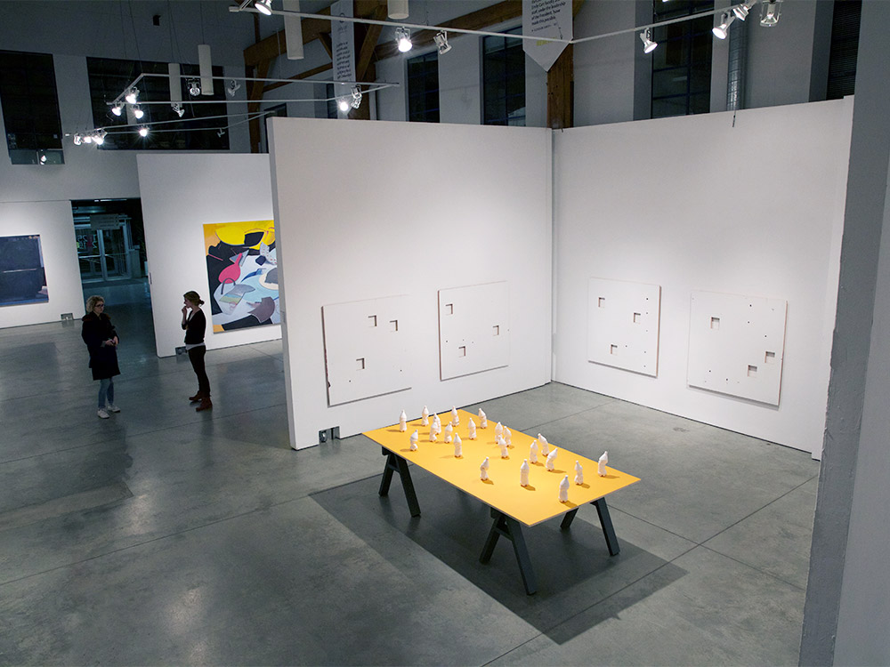
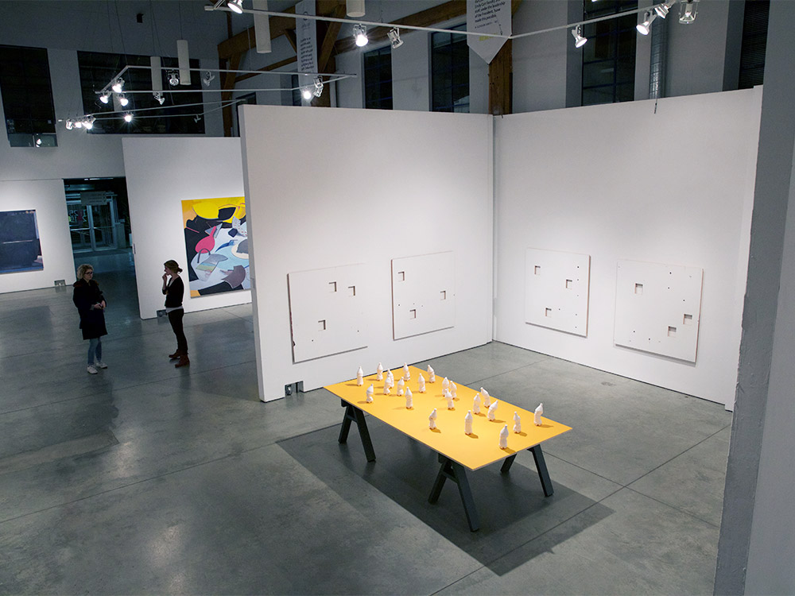

Ghosts
MFA Thesis Exhibition - Emily Carr University
March 2016 - Concourse Gallery, Vancouver, British Columbia
Ghosts featured a series of nine white monochrome paintings hung around
the perimeter of the Concourse Gallery in Emily Carr University's Granville Island campus.
Three rectangular holes were cut in each 48"x48" plywood panel, which were mounted on to the walls prior to being
painted with the gallery's standard wall paint. A yellow plywood tabletop supporting an array of cast plaster
bottles was positioned in the center of the gallery.
Ghosts explores the ways in which we seek to derive meaning from the most basic of forms. The rectangular
holes in each painting become eyes in contorted faces while the arrangement of bottles appear as figures from an unknown
game of territorial strategy. Through reducing complexity of form, this exhibition invites individuals to reflect upon
what they bring to the viewing of an artwork and how this subjective perception follows us in our daily lives.